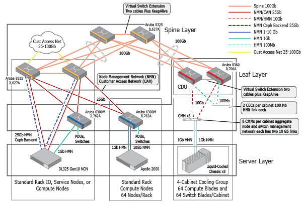

This CSM Overview describes the Cray System Management ecosystem with the hardware, software, network, and access to these services and components.
The CSM installation prepares and deploys a distributed system across a group of management nodes organized into a Kubernetes cluster which uses Ceph for utility storage. These nodes perform their function as Kubernetes master nodes, Kubernetes worker nodes, or utility storage nodes with the Ceph storage.
System services on these nodes are provided as containerized micro-services packaged for deployment as helm charts. These services are orchestrated by Kubernetes to be scheduled on Kubernetes worker nodes with horizontal scaling to increase or decrease the number of instances of some services as demand for them varies, such as when booting many compute nodes or application nodes.
The HPE Cray EX system has two types of nodes:
The following system networks connect the devices listed:
During initial installation, several of those networks are created with default IP address ranges. See Default IP Address Ranges
The network management system (NMS) data model and REST API enable customer sites to construct their own “networks” of nodes within the high-speed fabric, where a “network” is a collection of nodes that share a VLAN and an IP subnet.
The low-level network management components (switch, DHCP service, ARP service) of the management nodes and ClusterStor interfaces are configured to serve one particular network (the “supported network”) on the high-speed fabric. As part of the initial installation, the supported network is created to include all of the compute nodes, thereby enabling those compute nodes to access the gateway, user access services, and ClusterStor devices.
A site may create other networks as well, but it is only the supported network that is served by those devices.

The initial installation of the system creates default networks with default settings and with no external exposure. These IP address default ranges ensure that no nodes in the system attempt to use the same IP address as a Kubernetes service or pod, which would result in undefined behavior that is extremely difficult to reproduce or debug.
The following table shows the default IP address ranges
| Network | IP Address Range |
|---|---|
| Kubernetes service network | 10.16.0.0/12 |
| Kubernetes pod network | 10.32.0.0/12 |
| Install Network (MTL) | 10.1.0.0/16 |
| Node Management Network (NMN) | 10.252.0.0/17 |
| High Speed Network (HSN) | 10.253.0.0/16 |
| Hardware Management Network (HMN) 10.254.0.0/17 | |
| Mountain NMN Allocate a /22 from this range per liquid cooled cabinet: * cabinet 1 * cabinet 2 * cabinet 3 * … | 10.100.0.0/17 Example IP address in the allocated ranges: * 10.100.0.0/22 * 10.100.4.0/22 * 10.100.8.0/22 * … |
| Mountain HMN Allocate a /22 from this range per liquid cooled cabinet: * cabinet 1 * cabinet 2 * cabinet 3 * … | 10.104.0.0/17 Example IP address in the allocated ranges: * 10.104.0.0/22 * 10.104.4.0/22 * 10.104.8.0/22 * … |
| River NMN | 10.106.0.0/17 |
| River HMN | 10.107.0.0/17 |
| Load Balanced NMN |
The above values could be modified prior to install if there is a need to ensure that there are no conflicts with customer resources, such as LDAP or license servers. If a customer has more than one HPE Cray EX system, these values can be safely reused across them all. Contact customer support for this site if it is required to change the IP address range for Kubernetes services or pods; for example, if the IP addresses within those ranges must be used for something else. The cluster must be fully reinstalled if either of those ranges are changed.
There are several network values and other pieces of system information that are unique to the customer system.
IP addresses and the network(s) for ncn-m001 and the BMC on ncn-m001.
The main Customer Access Network (CAN) subnet and the two address pools mentioned below need to be part of the main subnet.
For more information on the CAN, see Customer Access Network (CAN).
HPE Cray EX Domain: The value of the subdomain that is used to access externally exposed services. For example, if the system is named TestSystem, and the site is example.com, the HPE Cray EX domain would be testsystem.example.com. Central DNS would need to be configured to delegate requests for addresses in this domain to the HPE Cray EX DNS IP address for resolution.
HPE Cray EX DNS IP: The IP address used for the HPE Cray EX DNS service. Central DNS delegates the resolution for addresses in the HPE Cray EX Domain to this server. The IP address will be in the can-static-pool subnet.
CAN gateway IP address: The IP address assigned to a specific port on the spine switch, which will act as the gateway between the CAN and the rest of the customer’s internal networks. This address would be the lasthop route to the CAN network.
HPE Cray EX systems are designed so that system management services (SMS) are fully resilient and that there is no single point of failure. The design of the system allows for resiliency in the following ways:
Kubernetes is designed to ensure that the desired number of deployments of a micro-service are always running on one or more worker nodes. In addition, it ensures that if one worker node becomes unresponsive, the micro-services that were running on it are migrated to another worker node that is up and meets the requirements of those micro-services.
For more information about resiliency topics see Resilience of System Management Services.
The standard configuration for System Management Services (SMS) is the containerized REST micro-service with a public API. All of the micro-services provide an HTTP interface and are collectively exposed through a single gateway URL. The API gateway for the system is available at a well known URL based on the domain name of the system. It acts as a single HTTPS endpoint for terminating Transport Layer Security (TLS) using the configured certificate authority. All services and the API gateway are not dependent on any single node. This resilient arrangement ensures that services remain available during possible underlying hardware and network failures.
Access to individual APIs through the gateway is controlled by a policy-driven access control system. Administrators and users must retrieve a token for authentication before attempting to access APIs through the gateway and present a valid token with each API call. The authentication and authorization decisions are made at the gateway level which prevent unauthorized API calls from reaching the underlying micro-services. For more detail on the process of obtaining tokens and user management, see System Security and Authentication.
Review the API documentation in the supplied container before attempting to use the API services. This container is generated with the release using the most current API descriptions in OpenAPI 2.0 format. Because this file serves as both an internal definition of the API contract and the external documentation of the API function, it is the most up-to-date reference available.
The API Gateway URL for accessing the APIs on a site-specific system is https://api.SYSTEM-NAME.DOMAIN-NAME/apis/.
The internal URL from a local console on any of the management nodes is https://api-gw-service-nmn.local/apis.